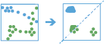

GeoAnalytics distributes the analytics work across your ArcGIS GeoAnalytics Server. This allows you to analyze more data faster with multiple machines. The following tools are available:
- Aggregate Points
- Build Multi-Variable Grid
- Describe Dataset
- Join Features
- Reconstruct Tracks
- Summarize Attributes
- Summarize Within
- Geocode Locations from Table
- Enrich From Multi-Variable Grid
- Detect Incidents
- Find Similar Locations
- Calculate Density
- Find Point Clusters
- Find Hot Spots
- Forest-based Classification and Regression
- Generalized Linear Regression
- Create Buffers
- Append Data
- Calculate Field
- Copy to Data Store
- Overlay Layers
- Dissolve Boundaries
- Merge Layers
- Clip Layer
GeoAnalytics focuses on analyzing large amounts data with an emphasis on both spatial and temporal patterns.
Summarize Data
The Summarize Data toolset contains tools that calculate total counts, lengths, areas, and basic descriptive statistics of features and their attributes within areas or near other features.
- Aggregate Points calculates statistics about points that fall within specified areas or bins.
- Build Multi-Variable Grid generates a grid of square or hexagonal bins and calculates values for each bin based on the proximity of each input layer.
- Describe Dataset calculates a summary of your input, and can optionally generate a sample of your input layer.
- Join Features calculates statistics about features that share a spatial, temporal, or attribute relationship with other features.
- Reconstruct Tracks calculates statistics about points or polygons that belong to the same track and reconstructs inputs into tracks.
- Summarize Attributes calculates statistics about feature or tabular data that share attributes.
- Summarize Within calculates statistics for area features and attributes that overlap each other.
Aggregate Points |

|
Using a layer of point features and either a layer of area features or bins defined by a specified distance, this tool determines which points fall within each area or bin and calculates statistics about all the points within each area or bin. You may optionally apply time slicing with this tool.
The following are examples:
- Given point locations of crime incidents, count the number of crimes per county or other administrative district.
- Find the highest and lowest monthly revenues for franchise locations using 100-kilometer bins.
Build Multi-Variable Grid |

|
The Build Multi-Variable Grid tool generates a grid of square or hexagonal bins and calculates variables for each bin based on the proximity of one or more input layers.
The following are examples:
- Given multiple layers of public transportation infrastructure, what part of the city is least accessible by public transportation?
- Given layers of waterways, such as lakes and rivers, what is the name of the water body closest to each location in the U.S.?
- Given a layer of household income, where in the U.S. is the variation of income in the surrounding 50 miles the greatest?
Describe Dataset |

|
Summarize input features with statistics, sample layers, and visualization. You can choose to output a sample layer or extent layer.
The following are examples:
- Reference the calculated summary statistics to understand what values your dataset contains.
- Instead of drawing the entire dataset, create a subset layer to visualize features and their attributes when added to a map.
- Save time and resources and run analysis on a sample layer before running analysis on the entire dataset.
Join Features |

|
Using either feature layers or tabular data, you can join features and records based on specific relationships between the input layers or tables. Joins will be determined by spatial, temporal, and attribute relationships, and summary statistics can be optionally calculated.
The following are examples:
- Given point locations of crime incidents within a time, join the crime data to itself specifying a spatial relationship of crimes within 1 kilometer of each other and that occurred within 1 hour of each other to determine if there is a sequence of crimes close to each other in space and time.
- Given a table of ZIP Codes with demographic information and area features representing residential buildings, join the demographic information to the residences so each residence now has the information.
Reconstruct Tracks |

|
Using a time-enabled layer of point or polygon features that represent an instant in time, this tool determines which input features belong in a track and will order the inputs sequentially in time. Statistics are optionally calculated for the input features within each track.
The following are examples:
- Given point locations and time of hurricane measurements, calculate the mean wind speed and max wind pressure of the hurricane.
- Use GPS measurements of ships to reconstruct ship paths as lines.
Summarize Attributes |

|
Using either feature or tabular data, this tool summarizes statistics for specified fields.
The following are examples:
- Given locations of grocery stores with a field COMPANY_NAME, summarize the stores by the company name to determine statistics for each company.
- Given a table of grocery stores with fields COMPANY_NAME and COUNTY, summarize the stores by the company name and county to determine statistics for each company within each county.
Summarize Within |

|
Finds areas (and portions of areas) that overlap between two layers and calculates statistics about the overlap.
The following are examples:
- Given a layer of watershed areas and a layer of land-use areas by land-use type, calculate total acreage of land-use type for each watershed.
- Given a layer of parcels in a county and a layer of city boundaries, summarize the average value of vacant parcels within each city.
Find Locations
These tools are used to identify areas that meet a number of criteria you specify.
- Detect Incidents works with time-enabled layers to determine which features meet a specified condition.
- Geocode Locations from Table converts addresses into coordinates.
- Find Dwell Locations finds locations in track datasets where objects are staying within a certain distance for a certain duration of time.
- Find Similar Locations finds locations most similar to one or more reference locations based on criteria you specify.
Detect Incidents |

|
This tool works with a time-enabled layer of points, lines, areas, or tables that represents an instant in time. Using sequentially ordered features, called tracks, this tool determines which features are incidents of interest. Incidents are determined by conditions that you specify.
The following are examples:
- Detect hurricane measurements that are Category 4 hurricanes based on a wind speed attribute.
- Using GPS measurements of ship movement with a field representing the ship speed, find measurements that are greater than 1.5 times the mean of the previous five measurements.
Geocode Locations from Table |

|
Converts addresses into coordinates. Use this tool on big data file share tables.
Find Dwell Locations |
 |
This tool works with track datasets; it is composed of a time-enabled layer of points to find where objects dwell within a specified distance and duration.
The following are examples:
- Improve conservation efforts by analyzing animal movement patterns. Use this tool to uncover popular animal stay points as potential protected areas to preserve biodiversity.
- Using GPS locations for vehicles, find and address where slowdowns occur to improve traffic safety.
Find Similar Locations |

|
Based on criteria you specify, find similar locations by measuring the similarity of locations in your candidate search layer to one or more reference locations.
The following are examples:
- Find the 10 most similar stores by examining the number of employees and the annual sales.
- Find the 100 most similar cities by examining the relationship between population, annual growth, and tax revenue.
Analyze Patterns
These tools help you identify, quantify, and visualize spatial patterns in your data.
- Calculate Density takes known quantities of some phenomenon and spreads these quantities across the map.
- Find Hot Spots identifies statistically significant clustering in the spatial pattern of your data.
- Find Point Clusters finds clusters of point features in surrounding noise based on their spatial distribution.
- Forest-based Classification and Regression creates models and generates predictions using an adaptation of Leo Breiman's random forest algorithm, a supervised machine learning method.
- Geographically Weighted Regression created models using a local form of linear regression that is used to model spatially varying relationships.
- Generalized Linear Regression generates predictions or models a dependent variable in terms of its relationship to a set of explanatory variables.
Calculate Density |

|
The Calculate Density tool creates a density map from point features by spreading known quantities of some phenomenon (represented as attributes of the points) across the map. The result is a layer of areas representing the density.
The following are examples:
- Calculating densities of hospitals within a county. The result layer will show areas with high and low accessibility to hospitals, and this information can be used to determine where new hospitals should be built.
- Identifying areas that are at high risk of forest fires based on historical locations of forest fires.
- Locating communities that are far from major highways to plan where new roads should be constructed.
Find Point Clusters |

|
The Find Point Clusters tool finds clusters of point features in surrounding noise based on their spatial distribution.
The following are examples:
- Find clusters of pest-infested households to help target eradication efforts.
- Inform and act on rescue and evacuation needs based on the size and location of the clusters using geolocated tweets following natural hazards or terror attacks.
Find Hot Spots |

|
The Find Hot Spots tool will determine if there is any statistically significant clustering in the spatial pattern of your data.
- Are your points (crime incidents, trees, traffic accidents) really clustered? How can you be sure?
- Have you truly discovered a statistically significant hot spot (for spending, infant mortality, consistently high test scores), or would your map tell a different story if you changed the way it was symbolized?
Forest-Based Classification and Regression |

|
The Forest-based Classification and Regression tool models and generates predictions using an adaptation of Leo Breiman's random forest algorithm, which is a supervised machine learning method.
The following are examples:
- Given data on occurrence of seagrass, as well as a number of environmental explanatory variables represented as both attributes which has been enriched using a multivariable grid to calculate distances to factories upstream and major ports, future seagrass occurrence can be predicted based on future projections for those same environmental explanatory variables.
- Suppose you have crop yield data at hundreds of farms across the country along with other attributes at each of those farms (number of employees, acreage, and so on). Using these pieces of data, you can provide a set of features representing farms where you don't have crop yield (but you do have all of the other variables), and make a prediction about crop yield.
- Housing values can be predicted based on the prices of houses that have been sold in the current year. The sale price of homes sold, along with information about the number of bedrooms, distance to schools, proximity to major highways, average income, and crime counts can be used to predict sale prices of similar homes.
Generalized Linear Regression |

|
This tool performs Geographically Weighted Regression (GWR), which is a local form of linear regression used to model spatially varying relationships.
The following are examples:
- Is the relationship between educational attainment and income consistent across the study area?
- What are the key variables that explain high forest fire frequency?
- Where are the districts in which children are achieving high test scores? What characteristics seem to be associated? Where is each characteristic most important?
Generalized Linear Regression |
|
The Generalized Linear Regression tool generates predictions or models a dependent variable in terms of its relationship to a set of explanatory variables. This tool can be used to fit continuous (OLS), binary (logistic), and count (Poisson) models.
The following are examples:
- What demographic characteristics contribute to high rates of public transportation usage?
- Is there a positive relationship between vandalism and burglary?
- Which variables effectively predict 911 call volume? Given future projections, what is the expected demand for emergency response resources?
- What variables affect low birth rates?
Use Proximity
These tools help answer one of the most common questions posed in spatial analysis: What is near what?
- Create Buffers creates areas of a specified distance from features.
Create Buffers |

|
A buffer is an area that covers a given distance from a point, line, or polygon feature.
The following are examples:
- Using linear river features, buffer each river by 50 times the width of the river to determine a proposed riparian boundary.
- Given areas representing countries, buffer each country by 200 nautical miles to determine the maritime boundary.
Manage Data
These tools are used for the day-to-day management of geographic and tabular data.
- Append Data appends features to an existing hosted feature layer.
- Calculate Field creates a new field or modifies an existing field and creates a new layer in your contents.
- Clip Layers copies features that intersect a defined area of interest.
- Copy to Data Store copies data to your ArcGIS Data Store and creates a layer in your contents.
- Dissolve Boundaries merges areas that share a common boundary or attribute value.
- Merge Layers copies all features from two layers into a single result layer.
- Overlay Layers combines two or more layers into a single layer.
Copy to Data Store |

|
Copies an input feature layer or table to an ArcGIS Data Store and creates a layer in your contents in ArcGIS Enterprise.
The following are examples:
- Copy a collection of
.csvfiles in a big data file share to the spatiotemporal data store for visualization. - Copy the features in the current map extent that are stored in the spatiotemporal data store to the relational data store.
Calculate Field |

|
Calculates values for a new or existing field and creates a layer in your contents in ArcGIS Enterprise.
The following are examples:
- Modify an existing field named total to be the sum of revenue from fields total_2016, total_2017, and total_2018.
- Create a field to categorize hazard levels based on field values such as windspeed and pollutant.
Clip Layer |

|
Clips input features from defined areas of interest. The output result will be a subset of input features.
The following are examples:
- Create a subset of at-risk buildings that fall within flood zone areas.
- Determine which major roads run through your potential development areas.
Dissolve Boundaries |

|
Merges area features that intersect or share a common field value to create contiguous or multipart features.
The following are examples:
- Create a single feature representing the state of Hawaii by dissolving the boundaries of Hawaiian islands.
- Combine similar study areas based on soil type to output a contiguous soil type dataset.
Overlay Layers |

|
Combines two or more layers into one layer. Overlay is used to answer one of the most basic questions of geography; What is on top of what?
The following are examples:
- What parcels are within the 100-year floodplain? (Within is just another way of saying on top of.)
- What land use is on top of what soil type?
- What wells are within abandoned military bases?
Append Data |

|
Appends features to an existing hosted layer in your contents in ArcGIS Enterprise.
The following are examples:
- Update your 2018_Sales feature layer each month as your reports become available.
- Append hurricane tracking datasets from the years 2016 and 2017 into a master hurricane dataset.
- Collect and append datasets from various sources with different schemas using custom field mapping.
Merge Layers |

|
Combines two feature layers to create a single result layer. All fields from the merge layer will be included by default, or you can specify custom merge rules to define the resulting schema.
The following are examples:
- Merge three layers containing demographic information from England, Wales, and Scotland to make a single layer of Great Britain.
- Combine two layers containing parcel information for contiguous townships, keeping only the fields that have the same name and type in the two layers.
Data Enrichment
These tools help you explore the character of areas.
- Enrich From Multi-Variable Grid joins attributes from a multi-variable grid layer to a point layer.
Enrich From Multi-Variable Grid |

|
Efficiently joins attributes from a multi-variable grid to a point layer, allowing you to quickly add a large and diverse collection of information to point data for use in further spatial analysis.
The following is an example:
- Given a layer containing millions of power outage incidents, enrich the incident features with information about typical usage, environmental risks, and infrastructure conditions to study the relationship between these factors and power outage frequency.